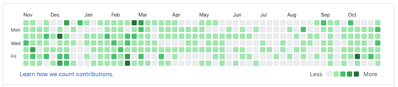

How to Appeal Yourself for an It Developer Position When You Have Zero Experience
In this article, I describe how to effectively convey your background in order to get a job as an IT developer when you have limited or no experience.
When I say “inexperienced” I’m referring to those who have never had any job in the IT category and have had no chance to take Computer Science classes.
The conditions and methods aren’t dependent on age, educational backgrounds, gender.
The methods I’m describing in this article are based on my career. I’ll also be referring to the career of other IT developers.
I’m an ordinary IT developer. I don’t have any internationally renowned skills or legendary achievements.
However, I’ve been accumulating experience in the IT category for over 10 years and I’m working as an IT developer even now.
I’m thinking mainly of Japan, but I don’t think the methods are region-specific.
How to Appeal
It’s important to convey what’s great about your experience and skills.
It’s especially important to find methods that effectively convey your experience when they are limited.
However, you may think, “I don’t have any great experience, and I can’t convey my achievements effectively.”
Many people are not good at appealing themselves to others. As a matter of fact, I’m the same too.
You may have felt sad, and thought “I wish I could appeal myself more effectively.”
Though, appeals that are too strong are not good and companies want honest employees.
The methods I recommend are as follows. You can start any of these anytime, and there is little cost involved.
Furthermore, all methods demonstrate your efforts, thus it will increase opportunities for your abilities to be understood by companies.
Get the Free GitHub Account and Publish Your Code on GitHub
GitHub is a renowned web service for managing source code and you can use many of their features with a free account.
GitHub provides many features which will make it easy to use Git a version management system.
Hence, many IT developers in the world have been using Git and GitHub, although its name is a bit funny.
Many web services in the world, apps in your smartphone, and their related technologies are developed on GitHub.
If you haven’t used GitHub, I recommend you create a free account.
Or, if you have had a GitHub account in the past, and you haven’t used it recently, I recommend you log in again with your account.
First, you should create a repository. Next, you should run git commit and git push to your GitHub repository. It’s okay even if it’s just a practice or a sample.
Even if it’s your first time to hear the words “repository”,git commit or git push, it’s no problem.
You can start learning from now!
Here are some Japanese titles will help newcomers:
- いちばんやさしい Git&GitHub の教本(Amazon.co.jp)
- わかばちゃんと学ぶ Git 使い方入門(Amazon.co.jp)
On GitHub, you can choose whether to make your repository, which is a set of codes, public or private.
If you set your repository to public, it could be seen by anyone, including those who don’t know you.
If you set the repository to private, the repository cloud be seen by you and anyone you choose.
However, you can update your setting to public or private. So you can set the repository to private at first if you are not comfortable making your code public on it.
One important point is that if you write your repository URL in your resume, you should make sure your repository is set to public.
If you had given your repository to a recruiter but set your repository to private, they won’t be able to see your repository, then you might miss a valuable opportunity.
By the way, GitHub will help you by recording your steps automatically.
GitHub has features to record your activities and demonstrate every step.
For example, let’s take a look at my activities on GitHub.
On GitHub there is a colorful area as follows, which changes into a deeper color when you increase your activities.

This feature will show your activities and support your motivation for continuing your GitHub efforts.
Build Your Website and Publish It
Recently, many people have their own websites, and you may have one too.
Publishing your website, building, and maintaining it, will be a good way to showcase yourself.
The Pros of Publishing a Website
By adding the URL of your website in your resume, you can communicate the detailed work you’ve done to the job recruiter.
Thus, if you update your daily efforts on your website, it will become a good way to appeal yourself.
For example, contents such as these will communicate your achievements well.
- Records of your learning
- Your commentary describing books and samples
- Survey and results that you’re interested in
Additionally, if you feel it’s easier to publish movies on YouTube which has your website embedded, this would be a good method too.
The Pros of Building a Website
When you publish a website, you technically need to have skills ranging from web frontend to IT infrastructure.
If you were to develop skills for building websites beyond writing articles, that will be regarded as a good achievement too.
One example is GitHub Pages: An easy website hosting service which you can use free with your GitHub account.
There are other cloud services you could choose to publish your website for free or for the const of a cup of coffee.
As follows are popular services in the 2020s.
Moreover, if you can pay about $10 or more annually, you can register your custom domain with the following services.
By building your website using the above services, you will be able to gain a higher reputation.
Even if the contents are unrelated to the position you are going for, your website building skills you acquired would be a good topic when you meet the recruiter. For example, you can say “I like X, so I built this website to describe X. The system structure is …”
Get Qualified
Currently, you don’t need any certificates to become an IT developer.
Nevertheless, several well-known certificates can probably demonstrate your effort and the specialized knowledge you have.
In Japan, there are the two following examinations that are recommended for all IT developer positions.
- Fundamental Information Technology Engineer Examination
- Applied Information Technology Engineer Examination
Also, there are the following private certificates that are effective and popular.
If anyone knows about the certificate Microsoft Azure, please tell me.
However, as a matter of fact, nothing beats school grades.
This is the truth, even if you want to bury your head in the sand.
If you have the opportunity to go on to the next level of education, I really recommend you to choose that.
In Closing
In this article, I described how to effectively convey your backgrounds, efforts, and achievements to get an IT developer position.
Though, you may feel the methods I described are difficult for you at the moment.
Perhaps you may need to study more in order to realize your goals, such as how I described in this article.
However, all of the methods I described above in order to appeal to companies could be realized using regular skills that any ordinary IT developer in the 2020s would have.
In other words, the difference comes down to whether you study the skills after getting a job or acquiring the skills before it.
So if you could increase the probability of getting a good position by acquiring skills early, and you could make use of your skills after getting the job, then there is no question that is better.
These methods that I’ve introduced might not necessarily be pleasing to the ear.
These methods require your daily efforts, even if you succeed, you won’t earn over $100,000 anytime soon.
However, I do think that my advice will help newcomers who are trying to start out as IT developers.
It will make me happy if this article could provide tips to those of you who are trying to become an IT developer and are seeking effective methods to achieve this.